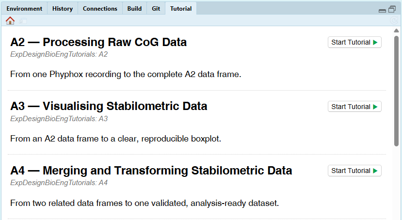

install.packages("remotes")
remotes::install_github(
"taian-vieira/ExpDesignBioEngTutorials@v1.0.0",
upgrade = "never"
)Appendix B — Interactive R Tutorials
Biomedical Engineering
Applied Statistics
This textbook is accompanied by a set of interactive R tutorials designed to transform the concepts developed throughout the book into reproducible data-analysis workflows.
The tutorials were originally developed for the Experimental Design in Biomedical Engineering course at Politecnico di Torino, but they are publicly available and can be used independently by any reader. They run locally in RStudio and combine guided examples, editable code exercises, hints, solutions, quizzes, and realistic example datasets, based on stabilometric data collected with smartphones (see Chapter 3).
The tutorials are distributed through the public R package ExpDesignBioEngTutorials.
The intended learning progression is:
Textbook
Understand the concepts
↓
Interactive tutorial
Practise with guided examples
↓
Independent analysis
Apply the workflow to your own dataFor students enrolled in the course, Moodle provides the official assignment instructions, deadlines, grading criteria, and submission activities. Readers using this book independently do not need access to Moodle in order to use the tutorials.
B.1 Installing the tutorial package
The tutorials are distributed as an R package hosted on GitHub.
The stable version associated with this edition of the textbook can be installed from R with:
After installation, restart RStudio.
Because the repository is public, installing the package does not require a GitHub account, a Personal Access Token (PAT), or a local Git configuration.
The package source, release history, and documentation are available at:
https://github.com/taian-vieira/ExpDesignBioEngTutorials
B.2 Opening the tutorials
After restarting RStudio, open the Tutorial tab (cf. Figure B.1), normally located in the upper-right pane. The tutorials installed with ExpDesignBioEngTutorials should appear there.

The available tutorials can also be listed from the R Console:
learnr::available_tutorials(
package = "ExpDesignBioEngTutorials"
)A tutorial can be launched directly from the Console. For example:
learnr::run_tutorial(
"A2",
package = "ExpDesignBioEngTutorials"
)Replace "A2" with "A3", "A4", …, "A8" to launch another tutorial.
B.3 How the tutorials relate to the textbook
The tutorial labels A2–A8 reflect the assignment sequence used in the Experimental Design in Biomedical Engineering course. Outside the course, the tutorials can be completed simply as a sequence of guided learning activities.
Each tutorial focuses on a specific stage of the experimental-data workflow, using stabilometric data as example.
| Tutorial | Main learning focus | Closely related textbook material |
|---|---|---|
| A2 | Process raw CoG recordings and construct a stabilometric data frame | R foundations, file organisation, importing data, and automated raw-data processing |
| A3 | Visualise stabilometric data using ggplot2 |
Data presentation and graphical representation |
| A4 | Merge participant information and derive new variables | Data manipulation and preparation |
| A5 | Calculate sample size and statistical power | Statistical power, Type I and Type II errors, and sample-size planning |
| A6 | Compute paired and independent two-group tests | Two-group designs and hypothesis testing |
| A7 | Compute repeated-measures ANOVA | Repeated-measures designs, main effects, and interactions |
| A8 | Examine anthropometric associations and normalisation | Regression, covariates, and adjusted group comparisons |
The tutorials are intended to complement, rather than replace, the explanations in the textbook. The book develops the rationale, equations, assumptions, and interpretation of each method, while the tutorials provide a guided environment in which the corresponding workflow can be implemented in R.
B.4 Tutorial A2 — Processing Raw CoG Data
The A2 tutorial reproduces a realistic raw-data workflow in which recordings are organised by participant and experimental condition.
Readers learn to:
- navigate a structured collection of participant folders;
- identify individual raw recordings;
- import Phyphox data and metadata into R;
- use a supplied function to process CoG recordings;
- create one processed observation;
- iterate over multiple files;
- validate the resulting data frame;
- export the complete dataset to Excel.
A central goal of the tutorial is to illustrate the transition from raw time-series recordings to an analysis-ready data frame.
The example dataset is deliberately smaller than a full experimental dataset, but its directory structure and workflow mimic those used in a real analysis project. The first assignment (A1), indeed, requires students to upload experimental CoG data collected with their smartphone as outlined in Chapter 3.
Launch the tutorial with:
learnr::run_tutorial(
"A2",
package = "ExpDesignBioEngTutorials"
)
NoteTransfer to your own project
The tutorial uses controlled example data. After completing it, the intended next step is to reproduce the same logic in an independent RStudio Project containing your own recordings or another suitably structured dataset.
B.5 Tutorial A3 — Visualising Stabilometric Data
The A3 tutorial introduces the layered structure of ggplot2 through a guided boxplot example.
Readers progressively learn to:
- translate a research question into plotting decisions;
- identify the observations and variables required for a graph;
- create a boxplot;
- overlay individual observations using jitter;
- map colour and fill to categorical variables;
- adjust box widths and point positions;
- control category order and axis tick marks;
- add meaningful labels and physical units;
- save publication-ready figures.
The tutorial also distinguishes between mapping a graphical property to a variable inside aes() and setting a constant graphical property outside aes().
Launch the tutorial with:
learnr::run_tutorial(
"A3",
package = "ExpDesignBioEngTutorials"
)
B.6 Tutorial A4 — Merging and Transforming Data
The A4 tutorial focuses on combining information originating from different sources and preparing an integrated dataset for statistical analysis.
Readers learn to:
- inspect two data frames before merging them;
- identify the variable that uniquely links observations across datasets;
- merge stabilometric data with participant information;
- verify that observations have been matched correctly;
- derive a new numerical variable from existing columns;
- inspect and validate the resulting data frame.
This tutorial reinforces the principle that statistical analysis should begin only after the structure and integrity of the dataset have been checked.
Launch the tutorial with:
learnr::run_tutorial(
"A4",
package = "ExpDesignBioEngTutorials"
)
B.7 Tutorial A5 — Sample Size and Statistical Power
The A5 tutorial develops the relationship between effect size, variability, sample size, significance level, and statistical power.
Readers learn to:
- identify the quantities required for a sample-size calculation;
- estimate the sample size required to detect a meaningful effect;
- calculate the statistical power associated with an available sample;
- interpret how changes in effect size, variability, and sample size influence power.
Where appropriate, the tutorial contrasts calculations developed explicitly from statistical principles with results obtained using dedicated R functions.
Launch the tutorial with:
learnr::run_tutorial(
"A5",
package = "ExpDesignBioEngTutorials"
)
B.8 Tutorial A6 — Computing Two-Group Tests
The A6 tutorial develops the logic of paired and independent two-group comparisons directly from the underlying equations.
Readers learn to:
- distinguish paired from independent designs;
- formulate the null and alternative hypotheses;
- compute the components of the corresponding t statistic;
- understand the role of variability and sample size;
- interpret the resulting test statistic and p-value.
The emphasis is on understanding how the test is constructed rather than treating a built-in hypothesis-testing function as a black box.
Launch the tutorial with:
learnr::run_tutorial(
"A6",
package = "ExpDesignBioEngTutorials"
)
B.9 Tutorial A7 — Computing Repeated-Measures ANOVA
The A7 tutorial extends the same computational reasoning to repeated-measures analysis of variance.
Readers first analyze one repeated factor and then extend the workflow to a design involving two repeated factors.
The tutorial guides readers through:
- partitioning variability into the relevant sums of squares;
- computing mean squares and F statistics;
- distinguishing subject-related variability from experimental effects;
- interpreting main effects;
- interpreting interactions between repeated factors.
The objective is to make the structure of ANOVA transparent before relying on higher-level modelling functions.
Launch the tutorial with:
learnr::run_tutorial(
"A7",
package = "ExpDesignBioEngTutorials"
)
B.10 Tutorial A8 — Anthropometric Normalisation of CoG Speed
The A8 tutorial examines how an apparent between-group difference in postural sway may be influenced by anthropometric characteristics.
Readers learn to:
- examine associations between CoG speed and anthropometric variables;
- fit and interpret simple and multiple regression models;
- decide whether an anthropometric variable is meaningfully associated with the outcome;
- remove relevant linear trends when appropriate;
- compare unadjusted and adjusted data;
- interpret whether a group difference persists after accounting for anthropometry.
The tutorial therefore connects regression analysis with the broader problem of interpreting group differences in the presence of potentially relevant covariates.
Launch the tutorial with:
learnr::run_tutorial(
"A8",
package = "ExpDesignBioEngTutorials"
)
B.11 Example data and reproducibility
The tutorials use example datasets distributed with the package.
These datasets are designed to reproduce the structure of realistic experimental workflows while remaining small enough for guided practice. In particular:
- A2 includes a miniature project containing participant folders, raw recordings, metadata, and supporting functions;
- later tutorials use structured example datasets that reproduce the variables and experimental factors required for the corresponding analyses;
- tutorial data are independent of the submissions produced by students enrolled in the course;
- all examples can be completed without access to Moodle.
The tutorials follow a transfer-oriented learning strategy:
- understand the workflow using controlled example data;
- practice each step interactively;
- reproduce the same reasoning in an independent analysis project.
This distinction is important. Completing a tutorial demonstrates the workflow, but meaningful learning occurs when the same logic can subsequently be applied to a new dataset.
B.12 Relationship to the course assignments
The tutorial labels A2–A8 correspond to the assignment sequence used in the Experimental Design in Biomedical Engineering course.
For students enrolled in the course, Moodle remains the authoritative source for:
- assignment requirements;
- deadlines;
- assessment criteria;
- submission procedures;
- penalties associated with incomplete or incorrect submissions.
The interactive tutorials themselves are not graded. They are strongly recommended guided learning activities designed to prepare students for the corresponding assignments.
Readers using this textbook independently do not need access to Moodle. Each tutorial can be completed using the example data distributed with the package and may subsequently be adapted to other datasets, teaching activities, or research projects.
B.13 Package versions and updates
This edition of the textbook refers to version 1.0.0 of ExpDesignBioEngTutorials.
The installed version can be checked with:
packageVersion("ExpDesignBioEngTutorials")For students formally enrolled in the course, the version specified in Moodle should always be used.
Independent readers may consult the GitHub repository for more recent releases:
https://github.com/taian-vieira/ExpDesignBioEngTutorials/releases
A newer release may contain corrections, improved exercises, or additional documentation. When reproducibility is important, install an explicit tagged version rather than the current development branch.
B.14 Using the tutorials in other courses
The tutorials and example data can also be used outside the original course.
An instructor may, for example:
- adopt the tutorials as guided laboratory activities;
- use only a subset of the A2–A8 sequence;
- combine the tutorials with locally developed assignments;
- use the example datasets for demonstrations;
- ask students to transfer the workflows to independent experimental data.
The tutorial package is publicly available from GitHub. Reuse should follow the licence specified in the repository.
TipSuggested use for independent readers
A useful sequence is to read the relevant textbook chapter first, complete the corresponding interactive tutorial, and then reproduce the workflow with a dataset of your own.
The tutorials are most valuable when they are used as a bridge between understanding a method and applying it independently.